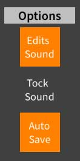
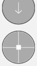

Tap on the right facing arrow in the middle of the left side of the screen to open the options and layers drawer, or drag from the iPad bevel at the left to the right.
Tap on the right facing arrow in the middle of the left side of the screen to open the options and layers drawer, or drag from the iPad bevel at the left to the right.1. Tap on the right facing arrow in the middle of the left side of the screen to open the options and layers drawer, or drag from the iPad bevel at the left to the right.
2.  Turn on Edits Sound. The virtual pointer will not sound any notes if this option is not on.
3.  Tap the the virtual pointer button at the right side of your screen. Then drag the pointer so that the target cross hairs move right over one of your notes.
Discussion: If you had your volume up, you just scrubbed a single note. The virtual pointer also shows you the name and octave of the note. Scrubbing is the process of moving over notes to audition your music.
Discussion: The virtual pointer can scrub a single note, an entire chord or the entire score. Switch between these three modes by double tapping on the virtual pointer. You will see one, two, then three dots, then it will cycle back to one.
3. Continue to drag the virtual pointer over other notes.
Discussion: In addition to scrubbing notes, the virtual pointer is an easy way to select anything in your score that you could select with your finger - but more precise and with magnification.
4. Drag the virtual pointer to an empty spot in one of your measures. Now in a separate gesture, tap the virtual pointer being careful not to move it.
Discussion: The virtual pointer can also insert new notes.
5. Tap the virtual pointer button at the right of the screen again to close the virtual pointer. You can also scoot the virtual pointer offscreen in one quick motion.
Result: You have learned how to use the virtual pointer to scrub, select and insert notes.